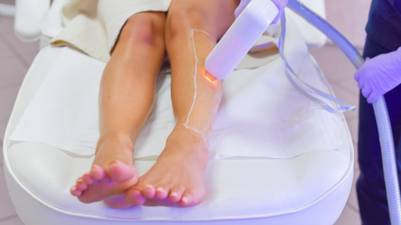
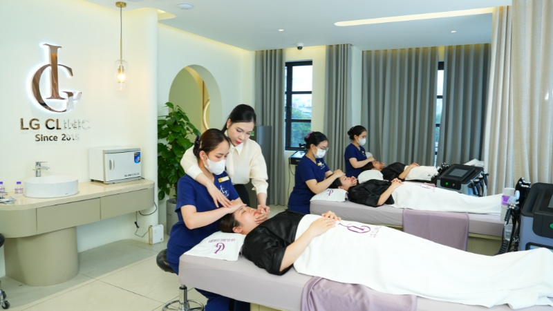

Các yếu tố ảnh hưởng đến thời gian học nghề spa
Thời gian học để trở thành một kỹ thuật viên spa chuyên nghiệp có thể dao động từ vài tháng đến vài năm. Điều này phụ thuộc vào những yếu tố sau:Năng lực cá nhân và sự nỗ lực
Mỗi học viên có khả năng tiếp thu và sự khéo léo khác nhau. Nếu bạn có năng khiếu, sự kiên trì và dành nhiều thời gian luyện tập, bạn chắc chắn sẽ ra nghề nhanh hơn. Ngược lại, nếu bạn là người mới bắt đầu từ con số 0, bạn cần phải đầu tư nhiều thời gian và nỗ lực hơn để làm quen với các khái niệm và kỹ thuật cơ bản.Mục tiêu nghề nghiệp và định hướng phát triển
Mỗi người học nghề spa đều có những mục tiêu nghề nghiệp khác nhau. Nếu bạn chỉ muốn trở thành một kỹ thuật viên chăm sóc da mặt cơ bản, bạn có thể ra nghề trong vòng 1 - 3 tháng. Tuy nhiên, nếu bạn có kế hoạch trở thành chuyên viên điều trị chuyên sâu hoặc chủ một spa, bạn sẽ cần đầu tư thời gian học tập và phát triển nghề nghiệp nhiều hơn, có thể kéo dài từ 6 tháng đến 1 năm.Chương trình và chất lượng đào tạo
Một chương trình đào tạo chuyên nghiệp, bài bản với giáo trình khoa học sẽ giúp bạn tiết kiệm thời gian học đáng kể. Trung tâm uy tín với đội ngũ giảng viên giàu kinh nghiệm và cơ sở vật chất hiện đại sẽ tạo điều kiện tốt nhất để bạn thực hành và nắm vững kỹ năng.Hệ đào tạo
- Các khóa học ngắn hạn tại trung tâm: Thường kéo dài từ 3 - 6 tháng, tập trung vào kỹ năng thực hành để học viên có thể ra nghề ngay.
- Hệ đào tạo chính quy (Trung cấp, Cao đẳng): Thời gian học sẽ lâu hơn, từ 2 - 3 năm, nhưng mang lại kiến thức chuyên sâu, nền tảng vững chắc về Y Dược và chứng chỉ giá trị cao.
Thời gian học nghề spa có thể linh hoạt, nhưng sự chủ động và quyết tâm sẽ giúp bạn rút ngắn lộ trình ra nghề.
Giải pháp rút ngắn thời gian học nghề spa
Mặc dù thời gian học nghề spa có thể dao động tùy vào nhiều yếu tố, nhưng nếu bạn có kế hoạch rõ ràng và biết cách tối ưu hóa quá trình học, bạn có thể rút ngắn thời gian học một cách hiệu quả. Dưới đây là một số cách giúp bạn học nhanh hơn mà vẫn đảm bảo chất lượng:- Có mục tiêu rõ ràng: Xác định ngay từ đầu mình muốn trở thành ai trong ngành spa sẽ giúp bạn chọn đúng khóa học và không lãng phí thời gian vào những kiến thức không cần thiết.
- Học phải đi đôi với hành: Lý thuyết là nền tảng, nhưng thực hành mới là yếu tố quyết định tay nghề của bạn. Hãy tận dụng mọi cơ hội để luyện tập, làm quen với máy móc và quy trình.
- Lựa chọn trung tâm đào tạo uy tín: Tìm hiểu kỹ về trung tâm, chương trình học, giảng viên và cam kết đầu ra. Một nơi đào tạo tốt sẽ giúp bạn tiếp thu kiến thức hiệu quả và tự tin ra nghề. Bạn có thể tham khảo thêm thông tin chi tiết về các khóa học tại LG Spa Training Center để có lựa chọn phù hợp nhất cho mình.
- Tinh thần tự học: Ngành làm đẹp luôn thay đổi, vì vậy hãy chủ động cập nhật kiến thức và công nghệ mới.
Lên kế hoạch học tập, chọn trung tâm uy tín và chăm chỉ thực hành là chìa khóa để rút ngắn thời gian học nghề spa.

Vậy có nên học nghề spa hay không?
Câu hỏi "có nên học nghề spa không" luôn được nhiều bạn trẻ quan tâm khi tìm kiếm một ngành nghề ổn định và tiềm năng. Thực tế, với tốc độ phát triển của ngành làm đẹp, spa không chỉ mang lại thu nhập hấp dẫn mà còn cho phép bạn làm việc trong môi trường hiện đại, chuyên nghiệp. Bên cạnh đó, nghề spa còn giúp bạn rèn luyện sự khéo léo, kiên nhẫn và khả năng giao tiếp tốt. Nếu bạn đang phân vân có nên học nghề spa không, hãy bắt đầu tìm hiểu kỹ về chương trình đào tạo, cơ hội việc làm và xu hướng thị trường để đưa ra quyết định đúng đắn cho tương lai.Nếu bạn đam mê ngành làm đẹp, yêu thích chăm sóc sức khỏe cho người khác và sẵn sàng học hỏi, nghề spa chắc chắn sẽ mang đến cho bạn nhiều cơ hội phát triển nghề nghiệp hấp dẫn.
 Như vậy, học spa bao lâu ra nghề phụ thuộc vào nhiều yếu tố khác nhau, nhưng nếu bạn xác định rõ mục tiêu và đầu tư đúng cách, bạn hoàn toàn có thể rút ngắn thời gian học mà vẫn đảm bảo chất lượng. Hãy lựa chọn khóa học phù hợp và luôn duy trì tinh thần cầu tiến để sớm đạt được thành công trong ngành spa.